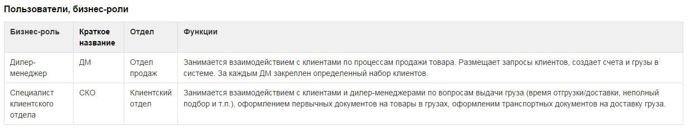
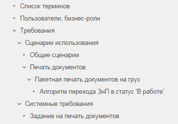
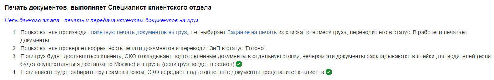
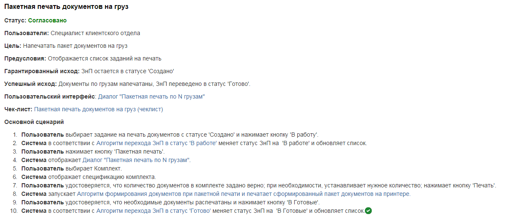
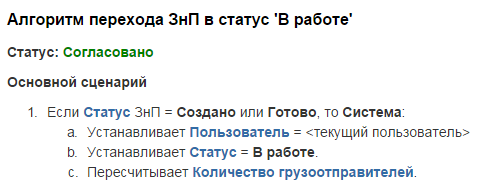
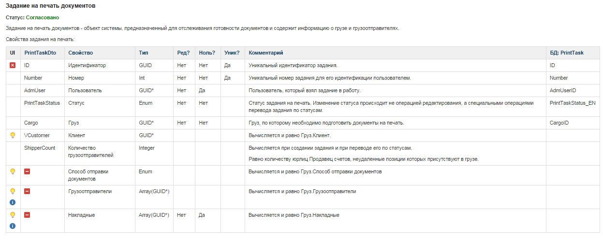
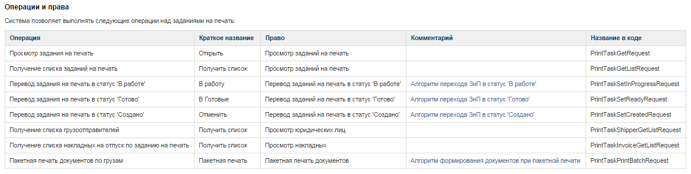
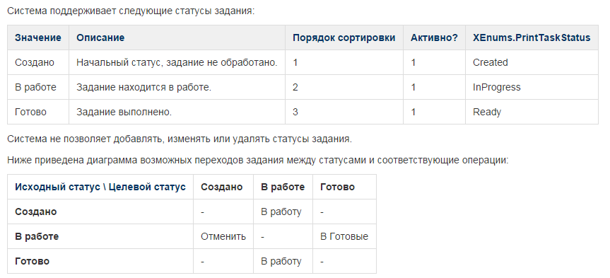

Недавно мой друг, программист, рассказал, что он не читает требования, а вместо этого приглашает аналитика на чашку чая, они вместе садятся, и аналитик рассказывает, что должно быть реализовано. Мой друг — умный человек и хороший программист, и причина, почему он получает знания о требованиях именно так, не в том, что ему лень читать документацию, а в том, что, даже прочитав ее, он до конца не разберется, что же надо сделать. В данной статье я хочу рассказать, как можно написать требования к программному продукту так, что программисты не просто используют требования, но и участвуют в их написании; на основе собственно опыта я хочу показать, каким образом можно описать требования, чтобы эти описания были достаточными для реализации системы.
Целью нашей разработки было создание с нуля учетной системы для одной из крупных российских компаний. Система была призвана заменить текущую, написанную в конце 90-х. В результате были реализованы платформа и один из бизнес-модулей. В реализованной части было порядка 120 объектов, 180 таблиц, около 30 печатных форм.
Хочу оговориться, что подход, описанный ниже, не универсален для написания любого ПО. Он подходит для систем уровня предприятия, которые строятся на основе объектно-ориентированного подхода: учетных, CRM-, ERP-систем, систем документооборота и т.п.
Вся документация на наш программный продукт состояла из следующих разделов:
· Общая часть
• Список терминов и определений
• Описание бизнес-ролей
· Требования
• Бизнес-требования
· Общие сценарии
· Сценарии использования
· Алгоритмы и проверки
• Системные требования
• Нефункциональные требования
• Требования к интеграции
• Требования к пользовательскому интерфейсу
· Реализация
· Тестирование
· Руководства
· Управление
Общая часть состояла всего из двух разделов: списка терминов и их определений и описания бизнес-ролей пользователей. Любая документация по системе, включая, например, тестовые сценарии, опиралась на определения, данные здесь.
Бизнес-требования описывали то, что необходимо бизнес-пользователям. Например, им вовсе не нужен объект системы Пользователь, но зато им нужно иметь возможность поменять стоимость товара в счете и распечатать его. Бизнес-требования состояли из общих сценариев, сценариев использования (use cases) и описания алгоритмов обработки данных. Подробно о разработке подобного рода требований можно узнать из книги Карла И. Вигерса и Джоя Битти Разработка требований к программному обеспечению.
Системные требования описывали свойства и методы всех объектов системы.
Нефункциональных требований в данной статье мы касаться не будем. Могу лишь отослать вас к отличной книге Architecting Enterprise Solutions авторов Paul Dyson, Andrew Longshaw.
Требования к интеграции описывали низкоуровневый интерфейс взаимодействия новой системы с несколькими другими системами компании. Здесь мы их рассматривать не будем.
Требования к пользовательскому интерфейсу – отдельная большая тема, возможно, для другой статьи.
Также здесь я не буду касаться других разделов документации, которые относятся к реализации, тестированию, руководствам и управлению.
Давайте рассмотрим подробнее, что такое список терминов и зачем он нужен.
Список терминов и определений
Очень часто при обсуждении функциональности системы разговор заходит в тупик. Еще хуже, если стороны расходятся, думая, что обо всем договорились, но в результате имеют разное понимание того, что надо сделать. Это происходит не в последней степени из-за того, что изначально участники проекта не смогли договориться о том, что значат те или иные термины. Бывает, что даже самые простые слова вызывают проблемы: что такое пользователь, чем отличается группа от роли, кто является клиентом. Поэтому в отличие от описания бизнес-ролей для терминов необходимо давать как можно более точные определения.
Поясню это на примере термина Пользователь. Википедия дает такое определение:
Пользователь — лицо или организация, которое использует действующую систему для выполнения конкретной функции.
Но нас оно не устраивало по нескольким причинам. Во-первых, в систему может зайти только человек, но не организация. Во-вторых, для нашей системы некорректно настоящее время глагола «использует» — система хранит данные о неактивных или удаленных пользователях, т.е. о тех, которые использовали систему ранее, но не могут в настоящее время. И наконец, у нас есть данные о потенциальных пользователях. Например, мы регистрируем сотрудника компании-клиента, который в дальнейшем может получить (а может и не получить) доступ в систему. Наше определение:
Пользователь — человек, который имеет, имел, или, возможно, будет иметь доступ в систему для совершения операций.
Теперь программист, прочитав определение, сразу поймет, почему свойство Логин в объекте Пользователь не обязательное.
Термины связаны друг с другом. В термине Пользователь используется «операция», поэтому приведу и ее определение:
Операция — совокупность действий, составляющих содержание одного акта бизнес-деятельности. Операция должна соответствовать требованиям ACID (Atomicity, Consistency, Isolation, Durability). Совокупность операций одного модуля представляет интерфейс взаимодействия клиент-сервер этого модуля.
Как видите, это определение очень важно для всей системы – оно не только связывает пользователя и его бизнес-действия с тем, что должно быть реализовано, но и накладывает требования на то, КАК должна быть реализована система (это КАК было определено ранее при разработке архитектуры) – бизнес-действия внутри операции должны быть внутри транзакции.
Работа над списком терминов происходила постоянно. Мы поддерживали его полноту, т.е. старались, чтобы в документации не было термина, который бы не был определен в этом списке. Кроме того, были случаи, когда мы меняли термины. Например, по прошествии нескольких месяцев с начала написания требований мы решили заменить Контрагент на Компания. Причина была проста: оказалось, что никто не в состоянии в речи, при разговоре, использовать слово «контрагент». А если так, то он должен был быть заменен на что-то более благозвучное.
Часто бывали случаи, когда приходилось прерывать обсуждение и лезть в требования, чтобы понять, подходит ли обсуждаемая функциональность под существующие определения. И для того, чтобы поддержать непротиворечивость требований, мы в итоге должны были или изменять реализацию, или корректировать описания терминов.
В итоге в списке у нас оказалось порядка 200 бизнес- и системных определений, которые мы использовали не только во всей документации, включая, например, и технический дизайн, разрабатываемый программистами, но и в разговоре, при устном обсуждении функциональности системы.
Второй частью, на которую опиралась вся документация, было описание бизнес-ролей.
Описание бизнес-ролей
Все знают, что используют систему пользователи. Но даже в небольшой системе они обладают разными правами и/или ролями. Наверное, самое простое деление – это администратор и рядовой пользователь. В большой системе ролей может быть несколько десятков и аналитику необходимо заранее об этом подумать и указывать роли при описании общих сценариев (смотри ниже) и в заголовках сценариев использования. Список бизнес-ролей используется для реализации групп и ролей пользователей, назначения им функциональных прав, он необходим тестировщикам, чтобы тестировать сценарии под нужными ролями.
Бизнес-роли пользователей нам не пришлось выдумывать, поскольку в компании были устоявшиеся отделы, роли, функции. Описание ролей было дано на качественном уровне на основе анализа основных функций сотрудников. Окончательное наделение ролей конкретными правами происходило ближе к концу разработки, когда набор функциональных прав стал устойчивым.
Пара примеров:

Уровни требований
Одной из важных концепций, которую мы применяли при разработке требований, было разделение их на уровни. Алистер Коберн в книге Современные методы описания функциональных требований к системам выделяет 5 уровней. Мы использовали 4 – три уровня бизнес-требований плюс системные требования:
Бизнес-требования
1. Общие сценарии (соответствует уровню очень белого у Коберна)
2. Сценарии использования (соответствует голубому)
3. Алгоритмы и проверки (скорее черный)
4. Системные требования (нет прямого аналога, скорее черный)
Кроме того наши требования представляли из себя дерево (с циклами). Т.е. общие сценарии уточнялись сценариями использования, которые, в свою очередь, имели ссылки на проверки и алгоритмы. Поскольку мы использовали wiki, физическая реализация такой структуры не представляла проблем. Сценарии использования, алгоритмы и проверки использовали объекты, их свойства и методы, описанные на системном уровне.
Такая методология позволяла нам с одной стороны описывать текущий сценарий настолько подробно, насколько нужно на данном уровне, вынося детали на нижний уровень. С другой стороны, находясь на любом уровне можно было подняться выше, чтобы понять контекст его выполнения. Это так же обеспечивалось функциональностью wiki: сценарии и алгоритмы были написаны на отдельных страницах, а wiki позволяла посмотреть, какие страницы ссылаются на текущую. Если алгоритм использовался в нескольких сценариях, то он в обязательном порядке выносился на отдельную страницу. Такие фрагменты программисты обычно реализовывали в виде отдельных методов.
На картинке ниже представлена часть нашей иерархии (о содержании речь пойдет дальше).

Важно отметить, что если системный уровень описывал все без исключения объекты системы, то сценарии были написаны далеко не для всех случаев поведения пользователя. Ведь многие объекты, по сути, являлись справочниками, и требования к ним более-менее очевидны и похожи. Таким образом мы экономили время аналитика.
Интересен вопрос, кому в проектной команде какой из уровней нужен. Будущие пользователи могут читать общие сценарии. Но уже сценарии использования для них сложны, поэтому аналитик обычно обсуждает сценарии с пользователями, но не отдает их им для самостоятельного изучения. Программистам обычно нужны алгоритмы, проверки и системные требования. Вы однозначно можете уважать программиста, который читает сценарии использования. Тестировщикам (как и аналитикам) нужны все уровни требований, поскольку им приходится проверять систему на всех уровнях.
Использование wiki позволяло работать над требованиями параллельно всем членам проектной команды. Замечу, что в один и тот же момент разные части требований находились в разных состояниях: от находящихся в работе до уже реализованных.
Бизнес-требования
Общие сценарии
Корневая страница нашего дерева требований состояла из общих сценариев, каждый из которых описывал один из 24 бизнес-процессов, подлежащих реализации в данном модуле. Сценарии на странице располагались в той последовательности, в которой они осуществлялись в компании: от создания объекта с проданными товарами, до передачи их клиенту. Некоторые специфические или вспомогательные сценарии помещались в конце в отдельном разделе.
Общий сценарий – это последовательность шагов пользователя и системы для достижения определенной цели. Описания общих сценариев были значительно менее формальны по сравнению со сценариями использования, поскольку они не предназначались для реализации. Основная цель общего сценария – это обобщить сценарии использования, подняться над системой и увидеть, что же в конечном итоге хочет сделать пользователь, и как система ему в этом помогает. Хочу заметить, что общие сценарии также содержали шаги, которые пользователь осуществлял вне системы, поскольку надо было отразить его работу во всей полноте, со всеми этапами, необходимыми для достижения бизнес-цели. На этом уровне хорошо видна роль системы в работе сотрудника компании, видно какая часть этой работы автоматизирована, а какая нет. Именно здесь становилось ясно, что некоторая последовательность действий, которую мы предлагали выполнить пользователю в системе, избыточна, что часть шагов можно сократить.
Некоторые другие цели общих сценариев:
· упорядочение знаний о работе пользователей и системы
· согласование бизнес-процессов с будущими пользователями
· основа для понимания того, что требования полны, что ничего не упущено
· входная точка при поиске нужного сценария или алгоритма
Вот пример одного из общих сценариев:

Как видите, только половина шагов автоматизирована, да и те описаны как можно более кратко. Также из первого шага видно, что ручной перевод задания на печать в статус ‘В работе’ в принципе лишний, можно упростить работу пользователя и автоматически переводить задание в этот статус при печати.
Ссылка «Задание на печать», указывающая на описание объекта в системных требованиях, лишняя, поскольку никому не требуется перепрыгнуть на него из общего сценария. А вот ссылка «пакетная печать документов на груз» важна – она ведет на сценарий использования, формально описывающий действия пользователя и системы.
Наши сценарии использования имели следующий формат:
· Заголовок со следующими полями:
• статус (В работе | Готов к рецензированию | Согласован)
• пользователи (по описанию бизнес-ролей)
• цель
• предусловия
• гарантированный исход
• успешный исход
• ссылка на описание пользовательского интерфейса (разработанного проектировщиком интерфейсов)
• ссылка на сценарий тестирования (заполнялось тестировщиками)
· Основной сценарий
· Расширения сценария
Сценарии использования
Сценарий использования содержал пронумерованные шаги, которые в 99% случаев очевидным образом начинались со слов Пользователь или Система. Нумерация важна, поскольку позволяла в вопросах и комментариях сослаться на нужный пункт. Каждый шаг – это обычно простое предложение в настоящем времени. Проверки и алгоритмы выносились на следующий уровень и часто на отдельные страницы, чтобы упростить восприятие сценария, а также для повторного использования.
Приведу сценарий использования, на который ссылается общий сценарий выше.

Часто аналитики рисуют пользовательский интерфейс и на его основе пишут сценарии, объясняя это тем, что так нагляднее. Доля истины в этом есть, но мы придерживались позиции, что интерфейс – это дело проектировщика интерфейса. Сначала аналитик описывает, что должно происходить, а затем проектировщик интерфейса рисует эскиз web-страницы или диалога. При этом бывало так, что сценарий приходилось менять. В этом нет ничего страшного, ведь наша цель — спроектировать все части системы так, чтобы было удобно пользователю. При этом каждый участник проектной команды, будь то аналитик или проектировщик интерфейса, обладая специфическими знаниями и внося свой вклад в общее дело, оказывает влияние на работу других членов команды проекта. Только вместе, объединив усилия, можно получить отличный результат.
Алгоритмы и проверки
Интересная проблема возникла при написании алгоритмов. Аналитик пытался их описать как можно более полно, т.е. включать все возможные проверки и ответвления. Однако получившиеся тексты оказывались плохо читабельны, и, как правило, все равно какие-то детали упускались (вероятно, сказывалось отсутствие компилятора -). Поэтому аналитику стоит описывать алгоритм настолько полно, насколько это важно в плане бизнес-логики, второстепенные проверки программист сам обязан предусмотреть в коде.
Например, рассмотрим простой алгоритм ниже.

В алгоритме указана всего одна проверка, но очевидно, что при написании кода метода программист должен реализовать проверки на входные параметры; выбросить исключение, если текущий пользователь не определен и т.д. Также программист может объединить данный алгоритм с алгоритмами переходов в другие статусы и написать единый непубличный метод. На уровне API останутся те же операции, но вызывать они будут единый метод с параметрами. Выбрать лучшую реализацию алгоритмов – это как раз компетенция программиста.
Системные требования
Как известно, программирование – это разработка и реализация структур данных и алгоритмов. Таким образом, по большому счету, все, что надо знать программисту – это структуры данных, необходимые для реализации системы, и алгоритмы, которые ими манипулируют.
При разработке системы мы использовали объектно-ориентированный подход, а поскольку в основе ООП лежат понятия класса и объекта, то наши структуры данных – это описания классов. Термин «класс» специфичен для программирования, поэтому мы использовали «объект». Т.о. объект в требованиях равен классу в объектно-ориентированном языке программирования (в скобках замечу, что в паре разделов требований пришлось изгаляться, чтобы в тексте разделить объект-класс и объект-экземпляр этого класса).
Описание каждого объекта располагалось на одной wiki-странице и состояло из следующих частей:
· Определение объекта (копия из списка терминов)
· Описание свойств объекта
· Описание операций и прав
· Данные
· Дополнительная информация
Все, что только можно, мы старались описать в табличном виде, поскольку таблица более наглядна, ее структура способствует упорядочению информации, таблица хорошо расширяема.
Первая таблица каждого объекта описывала признаки его свойств, необходимые для того, чтобы программист смог создать структуры данных в БД и реализовать объект на сервере приложения:
Название
Названием свойства оперирует как пользователь (например, «я изменил номер счета», Номер – свойство объекта Счет), так и проектная команда. Повсеместно в документации использовались ссылки на свойства в виде простой нотации Объект.Свойство, очевидной для любого участника проекта.
Тип
Мы использовали Datetime, Date, Time, GUID, String, Enum, Int, Money, BLOB, Array(), Float, Timezone, TimeSpan. Тип имел отражение на всех уровнях приложения: на уровне БД, сервера приложения, в пользовательском интерфейсе в виде кода и графического представления. Каждому типу было дано определение, чтобы их реализация не вызывала вопросов у программистов. Например, было дано такое определение типу Money: содержит вещественное число с точностью до 4-го знака после запятой, число может быть отрицательным и положительным; одновременно со значением система хранит валюту; валюта по умолчанию — российский рубль.
Признак редактируемости
Да или Нет в зависимости от того, позволяет ли система пользователям менять значение этого свойства в операции редактирования. В нашей системе это ограничение реализовывалось на сервере приложения и в пользовательском интерфейсе.
Признак наличия нуля
Да или Нет в зависимости от того, может ли поле не содержать значения. Например, поле типа Boolдолжно содержать одно из возможных значений, а поле типа String обычно может быть пустым (NULL). Это ограничение реализовывалось на уровне БД и на сервере приложения.
Признак уникальности
Да или Нет в зависимости от того, является ли это поле уникальным. Часто уникальность определяется на группе полей, в этом случае у всех полей в группе стояло Да+. Это ограничение реализовывалось на уровне БД (индекс) и на сервере приложения.
Комментарий
Описание поля: что означает, для чего нужно, как используется. Если значение свойства вычисляемое, то это указывается явно с описанием алгоритма расчета этого значения.
Кроме этих было еще две колонки, которые заполнялись программистами серверной части при реализации объекта:
· Название свойства объекта в программном интерфейсе.
· Название поля в БД.
Оба этих поля не обязательные, поскольку, например, свойство объекта может не храниться в БД, а быть вычисляемым, как сумма счета.
Хочу еще раз обратить внимание, что в написании требований принимали участие программисты. Это важно по многим причинам. Во-первых, таким образом программисты лучше осознавали требования, более того, требования становились «ближе к телу», а не просто неким куском бумаги, написанным каким-то аналитиком. Во-вторых, автоматически формировалась документация для API. В-третьих, поддерживалась трассируемость (traceability) требований, т.е. всегда было понятно, реализовано ли то или иное свойство, что особенно становилось важным при модификации требований. Безусловно, такая методология требовала большей дисциплины от программистов, что на самом деле являлось положительным фактором.
Кроме того благодаря этим колонкам, программистам, работающим над разными уровнями приложения, всегда можно было найти общий язык, т.е. понять соответствие между свойством объекта в требованиях, полем в базе данных и свойство в API.
Как я уже писал, табличный вид очень удобен для расширения. Например, для описания начальной миграции у нас была колонка с именем свойства старой системы или алгоритмом преобразования данных. Также мы использовали специальные значки для описания того, как выглядит объект в пользовательском интерфейсе. Одно время у нас была колонка для имени индекса в БД, чтобы программисты не забывали их создавать для уникальных полей. При необходимости вы можете добавить колонку с размерностью типов данных для каждого свойства.
Вот типичное описание свойств нашего объекта.

Вторая таблица объекта содержала описание его операций и их прав. Каждая операция в системе имела уникальное название (колонка Операция), но в пользовательском интерфейсе (в меню) операции отображались под краткими названиями (Краткое название). Для выполнения любой операции надо было обладать определенным правом (Право). Колонка Комментарий для сложных методов содержала описание алгоритма или ссылку на него или на более общий сценарий использования. CRUD операции над всеми типами объектами у нас были стандартизированы, поэтому для них алгоритмы обычно не требовались.
Колонка Название в коде опять заполнялась программистом что, как и при описании объекта, было нужно для документирования API, повышения вовлеченности программистов в написание требований и трассируемости. Ниже – пример описания операций объекта:

В этом разделе были также таблицы, описывающие переход по статусам.

В ячейках стоит краткое название операции, которая переводит исходный статус в целевой. Для более сложных случаев приходилось рисовать полноценные диаграммы.
После инсталляции системы в ней должны присутствовать определенные данные. Например, пользователь с администраторскими правами или список стран согласно общероссийскому классификатору стран мира. Эти данные описывались в разделе Данные.
Все, что не уложилось в стандартные разделы выше, шло в раздел Дополнительная информация. Например, у нас это была информация по связям данного объекта со старой системой.
Подытоживая, можно сказать, что системные требования для объекта содержали всю необходимую информацию для его реализации программистом: структуру данных в БД, описание доменного объекта, ограничения на данные и методы, алгоритмы реализации методов, данные, которые должны быть при инсталляции системы. Структура описания проста для понимания и расширяема.
Многие скажут, что такая детализация требований отнимает много времени и не нужна. На что я возражу – а как программист догадается, что конкретно необходимо реализовать? Разве фразы «Необходимо реализовать объект Пользователь» достаточно, чтобы через некоторое время получить работающий код? Сколько надо выпить чая с аналитиком, чтобы вытащить из него данные по 40 (столько было у нас) свойствам пользователя? Кто, как не аналитик или проектировщик, должен приложить усилия и описать все объекты?
Постановка задач программистам
После описания того, как выглядят требования, рассмотрим интересный вопрос: как должны быть сформулированы задачи для программистов (ограничимся серверной частью многозвенного приложения)? Оказывается, большинство задач (не дефектов) сводится к трем вариантам:
Типовая задача 1
Заголовок: Реализовать такой-то объект.
Текст задачи — ссылка на страницу с системными требованиями к объекту.
В такой задаче программисту необходимо:
· создать структуры в БД (таблица, ключи, индексы, триггеры и т.д.);
· реализовать доменный объект;
· реализовать создание начальных данных.
Все это возможно сделать на основе описания объекта в системной части требований. Программист также должен дополнить таблицу с описанием свойств названиями полей таблицы БД и объекта API.
Типовая задача 2
Заголовок: Реализовать такую-то операцию такого-то объекта и права на нее
Текст задачи — ссылка на страницу с системными требованиями к объекту.
Программист находит на странице название операции и права, а по ссылке в колонке Комментарий – алгоритмы, проверки, сценарий использования.
Типовая задача 3
Заголовок: Скорректировать объект и/или операцию.
Данная задача необходима в случае изменений требований. Текст задачи содержит описание изменений или ссылку на страницу сравнения версий требований.
Инструмент для написания и управления требованиями
Как, возможно, многие догадались, для работы с требованиями мы использовали Atlassian Confluence. Хочу кратко перечислить достоинства этого продукта.
· Удаленная работа. Собственно, как и у любой wiki.
· Ссылки. Как вы видели выше, ссылки для нас – один из основных инструментов для связывания отдельных частей требований.
· Возможность дробить требования на части (каждая часть – на своей странице).
· Оповещения при изменении. Это одно из важнейших средств совместной работы. Например, получив такое оповещение по одному из сценариев, руководитель разработки может ставить задачи разработчикам, а тестировщики знает, что надо скорректировать сценарии тестирования.
· Комментарии. Многие страницы требований у нас обрастали развесистыми иерархиями комментариев. В Confluence работать с ними достаточно удобно, поскольку иерархия не плоская, а в виде дерева. Кроме того есть возможность использовать полноценный редактор, а не просто текст.
· Наличие мощного текстового редактора. Не буду здесь подробно останавливаться, отмечу лишь, что на всем протяжении нашей работы Atlassian совершенствовал редактор, и если вначале было достаточно много глюков, то затем подавляющее большинство из них было исправлено.
· Хранение истории, сравнение разных версий страниц, возможность отката на старую версию.
· Просмотр иерархии страниц в виде дерева.
Однако было и несколько проблем:
· Поскольку все требования используют одни и те же названия объектов и их свойств, то было бы очень удобно иметь инструмент, который при изменении названия менял его во всей документации. А при удалении – находил все, уже недействительные, ссылки на него.
· Не было возможности сбора статистики. Например, каждое требование имело статус, но мы не могли автоматически собирать статусы всех требований и иметь динамическую картину процесса разработки требований. Но, кажется, на данный момент что-то подобное в Confluence уже появилось.
· Диаграммы приходилось рисовать в другой системе, сохранять в PNG и уже картинку помещать на страницу Confluence. При этом еще надо было приложить исходник, чтобы через пару месяцев его можно было найти и поправить.
· Я не нашел способа экспортировать иерархию страниц в MS Word. Экспорт в XML и PDF очень часто глючил (возможно, дело в размере иерархии).
В конце хочу выразить благодарность Вадиму Лободе и Артему Каратееву за ценные советы и тщательное рецензирование данной статьи.
Антон Стасевич